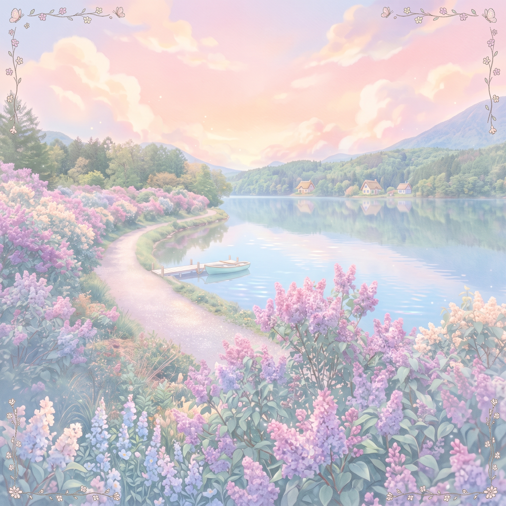

01Piano Solo No.1 · D-major
「リラの咲く湖」
Lakeside with Bloom of Lilas
清楚で可憐で壮大なイメージ。大学生のころにピアノの良さに気づき、初めて作曲したピアノ曲。ピアノを習ったことがなくまだたいして弾けなかったので鍵盤で探した音を自動演奏専用機（シーケンサー）に数値入力して作曲した曲です。
観光案内システムに組み込まれ、とある湖畔の街の役所ロビーでBGMとして長い間流していたことがあります。
リラ（ライラック）の花言葉：「思い出」「友情」